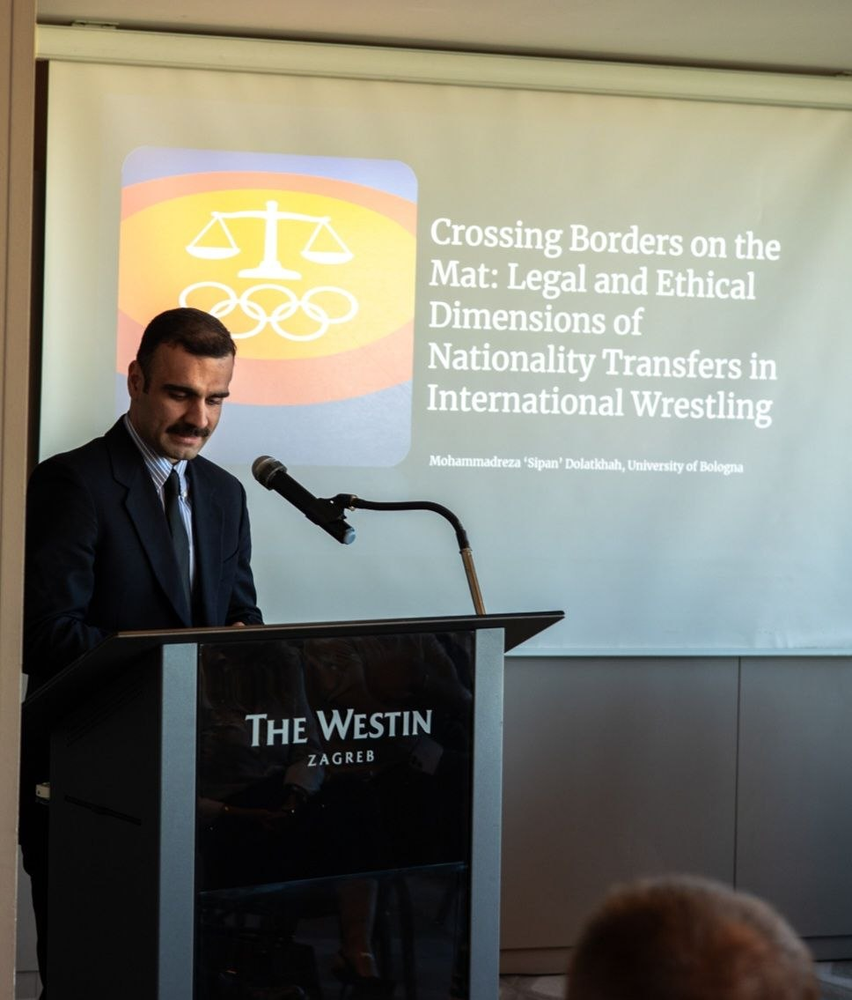

About
I work at the point where sport, technology, and law are forced to negotiate with each other.
My background is in sports law and international public law, built on an LL.M. from the University of Bologna. From there my work has moved outward into the regulatory questions that now sit next to sport: EU digital platform rules, AI governance, and how international institutions adapt when the ground shifts under them.
That has meant advising on governance for wrestling federations, working on the regulatory side of online sports streaming, and researching how human oversight should function under frameworks like the EU AI Act — often using professional sport as the case study that makes the abstract question concrete.
Alongside the research, I spend a lot of time making legal ideas legible outside the seminar room — through two podcasts, occasional national broadcast commentary, and a forthcoming introductory book on legal studies.

- Based
- Bologna, Italy
- Focus
- Sports law, EU digital & AI regulation, international public law
- Degree
- LL.M., University of Bologna — 110/110 cum laude
- Languages
- Persian, Kurdish, Armenian, English, Italian, Russian
- Currently
- Legal Advisor, Shamal Shin Construction — Independent Researcher. Currently advising on construction law while pursuing independent research in sport governance and regulatory frameworks. Actively engaged in academic inquiry and open to PhD opportunities, with a strong commitment to advancing interdisciplinary legal scholarship.
Curriculum Vitae
-
May 2026
Master of Legal Studies (LL.M.), University of Bologna, Italy
Thesis: This interdisciplinary project examined how digital transition reshapes football broadcasting regulation, focusing on competition law, media rights governance, and technological change. It identified structural gaps and proposed pathways for more coherent, future‑proof governance.
Supervisor: Prof. Daniele Senzani · Final grade: 110/110 cum laude
-
2024–2025
Law Exchange Program (Entertainment Law), University of Westminster, London, UK
Average grade: A
-
2020
Master of International Public Law, SBU National University, Iran
Grade: 16.5/20
-
2018
Bachelor of Law (LLB), Azad University, Iran
Grade: 18/20
Awards & Scholarships
-
2026
Best Young Researcher Award — Zagreb International Conference
Awarded for outstanding research performance and presentation, recognising excellence in early-career scholarship.
-
2024
Erasmus+ Mobility Scholarship — European Commission
Awarded following a competitive selection process, ranking first across all three preference lists submitted for Erasmus mobility placements.
Research & Publications
-
2026 · I-CON, Belgrade
AI-Assisted Decision Systems in Sport: Regulatory Frameworks, Private Authority, and Athlete Rights
Conference paper accepted for the I-CON conference, examining how AI-assisted decisions in sport interact with regulatory frameworks, private governing authority, and athlete rights.
-
2026 · ELU-S Conference, Lisbon
EU Regulation of Digital Platforms in Sports Broadcasting
Accepted abstract, developed into a full article covering competition law, the DMA, the DSA, the AVMSD, and Article 165 TFEU as they apply to sports broadcasting platforms.
-
Master's Thesis · Completed May 2026
Regulating Football Broadcasting in the Digital Era: A Comparative Legal Analysis of the United Kingdom, Italy, and Iran
Final dissertation in Law and Digital Transition. Supervisor: Prof. Daniele Senzani. Final grade: 110/110 cum laude.
-
Under publication · Expected 2026
Introduction to Legal Studies (in Persian)
Dolatkhah, M. & N. Dolatkhah. Book. Publisher: Qa'lam Publisher.
-
UWW World Conference 2025 · Zagreb · Peer-reviewed
Crossing Borders on the Mat: Legal and Ethical Dimensions of Nationality Transfers in International Wrestling
Dolatkhah, M. Conference paper. Awarded Best Young Researcher Award, Zagreb Conference.
-
Published Articles
Other Published Work
Dolatkhah, M. "The Impact of Sports Diplomacy on International Law and the Interface of Governments" (2023).
Dolatkhah, M. "Interpol and Its Benefits for International Law" (2017).
Outreach & Editorial Roles
Eight years of experience in sports commentary sit alongside the academic work — mostly channelled these days into two podcasts and occasional broadcast commentary.
Academic Outreach
-
Founder & Host
Radio Westphalia
Academic podcast produced with master's and PhD students, focusing on the historical development of international law, contemporary legal debates, and the socio-legal dimensions of global governance.
-
Founder & Host
Legal Legacy
Interview-based podcast featuring conversations with legal scholars and practitioners, bridging academic legal research with public discourse and making complex legal issues accessible to broader audiences.
-
National Media
Contributor, Iranian National Television
Legal commentator on sports governance and international regulatory issues, providing public-facing analysis grounded in legal research.
Editorial Roles
-
2026 – Active
Associate Editor, University of Bologna Law Review
Manuscript assessment, peer-review coordination, academic editing.
-
2025 – Active
Invited Editorial Board Member, Scientific Journal of the Faculty of Physical Education and Sport Sciences, University of Baghdad